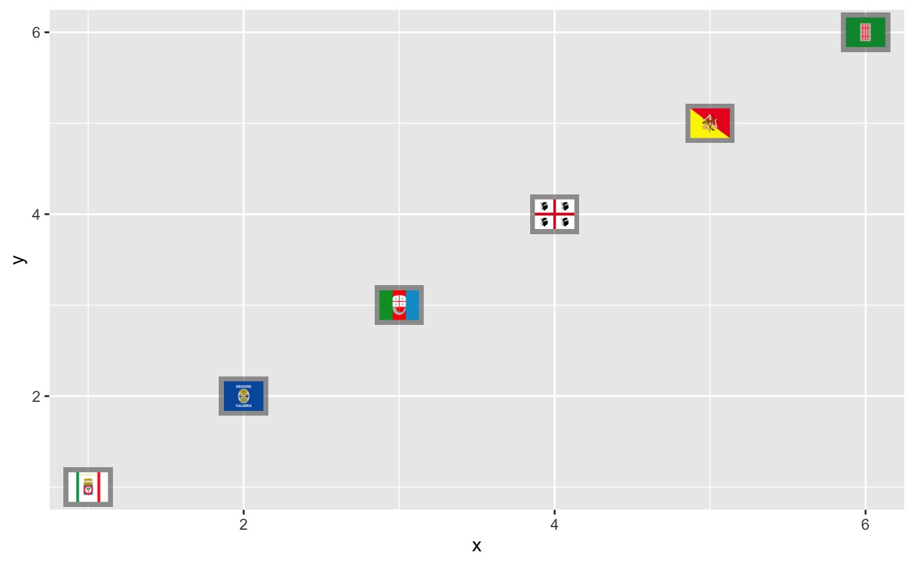
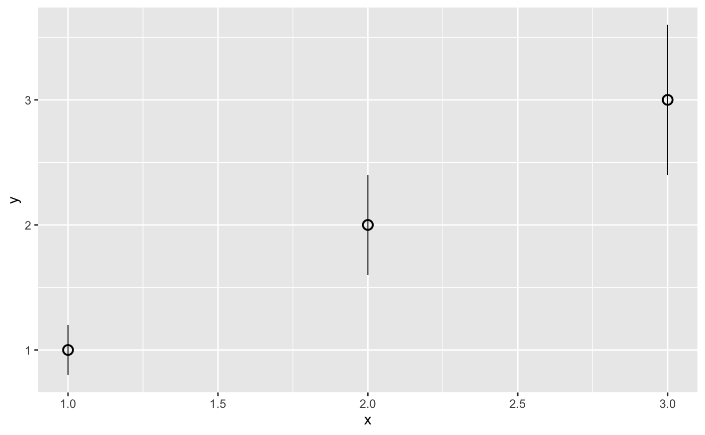
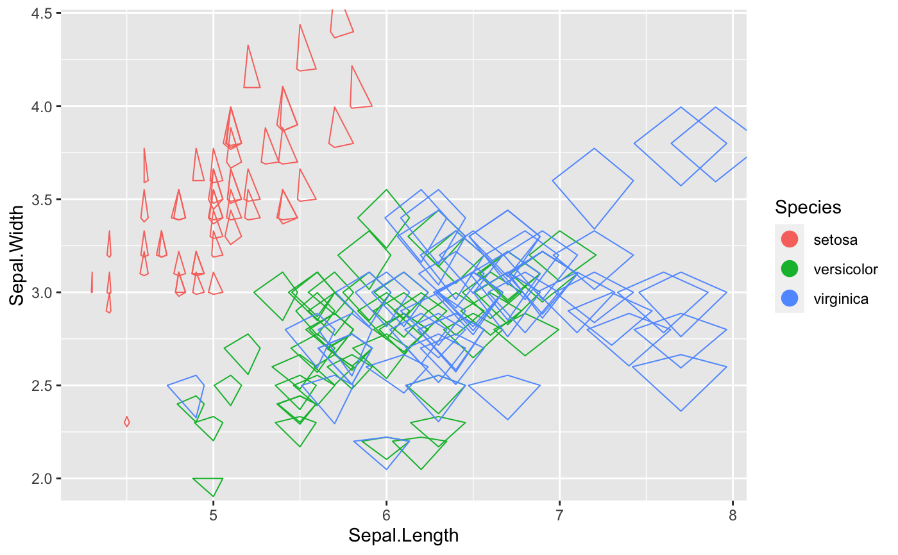

glyphGeoms.RdThe glyph geom is used to create scatterplots with a variety glyphs such as polygon glyph, serialaxes glyph, image glyph, point range glyph and text glyph.
geom_imageGlyph( mapping = NULL, data = NULL, stat = "identity", position = "identity", ..., images, width = 4, height = 3, na.rm = FALSE, show.legend = NA, inherit.aes = TRUE ) geom_pointrangeGlyph( mapping = NULL, data = NULL, stat = "identity", position = "identity", ..., ymin, ymax, linewidth = 1, showArea = TRUE, na.rm = FALSE, show.legend = NA, inherit.aes = TRUE ) geom_polygonGlyph( mapping = NULL, data = NULL, stat = "identity", position = "identity", ..., polygon_x, polygon_y, showArea = TRUE, linewidth = 1, na.rm = FALSE, show.legend = NA, inherit.aes = TRUE ) geom_serialAxesGlyph( mapping = NULL, data = NULL, stat = "identity", position = "identity", ..., serialAxesData, sequence = NULL, linewidth = 1, scaling = c("variable", "data", "observation", "none"), axesLayout = c("parallel", "radial"), showAxes = FALSE, showArea = FALSE, showEnclosing = FALSE, axesColor = "black", bboxColor = "black", na.rm = FALSE, show.legend = NA, inherit.aes = TRUE ) geom_textGlyph( mapping = NULL, data = NULL, stat = "identity", position = "identity", ..., text, na.rm = FALSE, show.legend = NA, inherit.aes = TRUE )
| mapping | Set of aesthetic mappings created by |
|---|---|
| data | The data to be displayed in this layer. There are three options: If A A |
| stat | The statistical transformation to use on the data for this layer, as a string. |
| position | Position adjustment, either as a string, or the result of a call to a position adjustment function. |
| ... | Other arguments passed on to `layer()`. |
| images | a list of images (a raster object, bitmap image). If not provided, `geom_point()` will be called. |
| width | width of image |
| height | height of image |
| na.rm | If FALSE, the default, missing values are removed with a warning. If TRUE, missing values are silently removed. |
| show.legend | logical. Should this layer be included in the legends?
|
| inherit.aes | If |
| ymin | vector with lower y-value of the point range. If not provided, `geom_point()` will be called. |
| ymax | vector with upper y-value of the point range. If not provided, `geom_point()` will be called. |
| linewidth | line width of serial axes plot |
| showArea | boolean to indicate whether area should be shown or not |
| polygon_x | nested list of x-coordinates of polygons, one list element for each scatterplot point. If not provided, `geom_point()` will be called. |
| polygon_y | nested list of y-coordinates of polygons, one list element for each scatterplot point. If not provided, `geom_point()` will be called. |
| serialAxesData | a serial axes numerical data set. If not provided, `geom_point()` will be called. |
| sequence | vector with variable names that defines the axes sequence |
| scaling | one of 'variable', 'data', 'observation' or 'none' to specify how the data is scaled. See Details for more information |
| axesLayout | either "radial" or "parallel" |
| showAxes | boolean to indicate whether axes should be shown or not |
| showEnclosing | boolean to indicate whether enclosing should be shown or not |
| axesColor | axes color |
| bboxColor | bounding box color |
| text | the text strings for each observation.
If the object is a factor then the labels get extracted with |
geom_pointrangeGlyph() is very close to geom_pointrange but with `loon` API
geom_...Glyph() understands the following aesthetics (required aesthetics are in bold):
x
y
alpha
colour
fill
group
shape
size
stroke
linetype
# image glyph if(requireNamespace("png")) { img_paths <- list.files(file.path(find.package(package = 'loon'), "images"), full.names = TRUE) images <- lapply(img_paths, function(path) png::readPNG(path)) p <- ggplot(data = data.frame(x = 1:6, y = 1:6), mapping = aes(x = x, y = y)) + geom_imageGlyph(images = images, alpha = 0.4, width = 2, height = 1.5) p }#># point range glyph p <- ggplot(data = data.frame(x = 1:3, y = 1:3), mapping = aes(x = x, y = y)) + geom_pointrangeGlyph(ymin=(1:3)-(1:3)/5, ymax=(1:3)+(1:3)/5) p# polygon glyph p <- ggplot(data = data.frame(x = 1:4, y = 1:4), mapping = aes(x = x, y = y)) + geom_polygonGlyph(polygon_x = list(x_star, x_cross, x_hexagon, -x_airplane), polygon_y = list(y_star, y_cross, y_hexagon, y_airplane), colour = 'black', fill = 'red') p# serial axes glyph p <- ggplot(data = iris, mapping = aes(x = Sepal.Length, y = Sepal.Width, color = Species)) + geom_serialAxesGlyph(serialAxesData = iris[, -5], axesLayout = "radial") p# text glyph p <- ggplot(data = data.frame(x = 1:26, y = 1:26), mapping = aes(x = x, y = y)) + geom_textGlyph(text = LETTERS, size = (1:26)/5) p